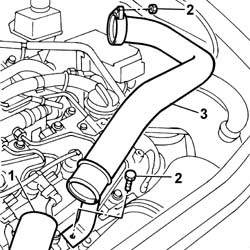

Procedures › 10 ENGINE › 1048 ENGINE AIR SUPPLY CIRCUIT › 1048B PRESSURE AIR CIRCUIT › 1048B44 RIGID air supply PIPE from heat exchanger to intake manifold - R.R. 1048B44 RIGID air supply PIPE from heat exchanger to intake manifold - R.R.
Path Procedures > 10 ENGINE > 1048 ENGINE AIR SUPPLY CIRCUIT > 1048B PRESSURE AIR CIRCUIT > 1048B44 RIGID air supply PIPE from heat exchanger to intake manifold - R.R.
Kind repair procedure (removal / refitting; the operation number is the code)
Applies to engines: 2.4 JTD 20V; all production periods
Interactive page https://sloeber94.github.io/elrnDB-lThss/en/#/851194
Applies to: engines: 2.4 JTD 20V; all production periods
1. Disconnect the heat exchanger air supply pipe from the rigid pipe.
2. Undo the bolt and the nut fixing the rigid pipe.
3. Remove the rigid air supply pipe between the heat exchanger and the intake manifold.
- Remove the O-ring on the throttle casing.

Topics linked from this page (2)
Topics that link to this page (65) 0010T40 MANUAL GEARBOX OIL - Change repair procedure (removal / refitting; the operation number is the code) · engines: 2.0 TB, 2.4 20V, 2.4 JTD 10V, 2.4 JTD 20V; all production periods 1004B18 POWER UNIT with manual gearbox, with front suspension subframe - R.R. repair procedure (removal / refitting; the operation number is the code) · engines: 2.4 JTD 20V; all production periods 1008A42 Power unit RIGID MOUNT - GEARBOX side - R&R repair procedure (removal / refitting; the operation number is the code) · engines: 2.4 JTD 20V; all production periods 1008A44 RIGID REAR power unit MOUNTING - R.R. repair procedure (removal / refitting; the operation number is the code) · engines: 2.4 JTD 20V; all production periods 1008A46 Power unit RIGID MOUNT - TIMING side - R&R repair procedure (removal / refitting; the operation number is the code) · engines: 2.4 JTD 20V; all production periods 1008B30 Gearbox side mount FLEXIBLE BLOCK/S - Replace repair procedure (removal / refitting; the operation number is the code) · engines: 2.4 JTD 20V; all production periods 1016B10 SINGLE CAMSHAFT HOUSING - REPLACE gasket repair procedure (removal / refitting; the operation number is the code) · engines: 2.4 JTD 20V; all production periods 1016C10 SINGLE CYLINDER HEAD - R.R. and Replace gasket repair procedure (removal / refitting; the operation number is the code) · engines: 2.4 JTD 20V; all production periods 1020A20 CRANKCASE SUMP - R.R. clean contact surfaces and apply sealant repair procedure (removal / refitting; the operation number is the code) · engines: 2.4 JTD 20V; all production periods 1020D11 Crankshaft oil seal FRONT COVER - R.R. Replace gasket with timing belt removed - Includes cleaning matching surfaces and applying sealant repair procedure (removal / refitting; the operation number is the code) · engines: 2.4 JTD 20V; all production periods 1020D12 Crankshaft oil seal FRONT COVER - R.R. and Replace seals repair procedure (removal / refitting; the operation number is the code) · engines: 2.4 JTD 20V; all production periods 1020D18 Front crankshaft COVER OIL SEAL - Replace repair procedure (removal / refitting; the operation number is the code) · engines: 2.4 JTD 20V; all production periods 1028H10 CONNECTING ROD and PISTON SET - R&R repair procedure (removal / refitting; the operation number is the code) · engines: 2.4 JTD 20V; all production periods 1032B10 TOOTHED timing BELT - R.R. for timing adjustment or replacement repair procedure (removal / refitting; the operation number is the code) · engines: 2.4 JTD 20V; all production periods 1032B46 TOOTHED DRIVE PULLEY/S - R.R. repair procedure (removal / refitting; the operation number is the code) · engines: 2.4 JTD 20V; all production periods 1032B52 TOOTHED DRIVEN PULLEY (one) - R.R. repair procedure (removal / refitting; the operation number is the code) · engines: 2.4 JTD 20V; all production periods 1032B60 TOOTHED DRIVEN PULLEY - R.R. repair procedure (removal / refitting; the operation number is the code) · engines: 2.4 JTD 20V; all production periods 1032C18 Timing belt MOVING TENSIONER - R.R. repair procedure (removal / refitting; the operation number is the code) · engines: 2.4 JTD 20V; all production periods 1032C32 TIMING BELT FIXED TENSIONER - R.R. repair procedure (removal / refitting; the operation number is the code) · engines: 2.4 JTD 20V; all production periods 1032D12 Timing system protective COVER(S) - R.R. repair procedure (removal / refitting; the operation number is the code) · engines: 2.4 JTD 20V; all production periods 1036L10 CAMSHAFTS in camshaft housing RR includes camshaft housing replacement. repair procedure (removal / refitting; the operation number is the code) · engines: 2.4 JTD 20V; all production periods 1036L30 FRONT OIL SEAL for camshaft housing camshaft - REPLACE repair procedure (removal / refitting; the operation number is the code) · engines: 2.4 JTD 20V; all production periods 1048A10 COMPLETE AIR FILTER -R.R. repair procedure (removal / refitting; the operation number is the code) · engines: 2.4 JTD 20V; all production periods 1048A14 air cleaner filtering element - replace. repair procedure (removal / refitting; the operation number is the code) · engines: 2.4 JTD 20V; all production periods 1048A50 air inlet pipe to turbocharger - r + r repair procedure (removal / refitting; the operation number is the code) · engines: 2.4 JTD 20V; all production periods 1048A56 UPPER RESONATOR - R.R. repair procedure (removal / refitting; the operation number is the code) · engines: 2.4 JTD 20V; all production periods 1048A57 LOWER RESONATOR - R.R. repair procedure (removal / refitting; the operation number is the code) · engines: 2.4 JTD 20V; all production periods 1048B14 air delivery pipe between turbo charger and heat exchanger - replace repair procedure (removal / refitting; the operation number is the code) · engines: 2.4 JTD 20V; all production periods 1048B20 Air supply HOSE from heat exchanger to rigid pipe -Replace repair procedure (removal / refitting; the operation number is the code) · engines: 2.4 JTD 20V; all production periods 1048B45 RIGID air supply PIPE between heat exchanger and intermediate hose - R.R. repair procedure (removal / refitting; the operation number is the code) · engines: 2.4 JTD 20V; all production periods 1060E10 PRESSURE PUMP for diesel injection - R.R. repair procedure (removal / refitting; the operation number is the code) · engines: 2.4 JTD 20V; all production periods 1060E30 PRESSURE PUMP drive PULLEY - R.R. repair procedure (removal / refitting; the operation number is the code) · engines: 2.4 JTD 20V; all production periods 1060E40 PRESSURE PUMP SUPPORT - R.R. repair procedure (removal / refitting; the operation number is the code) · engines: 2.4 JTD 20V; all production periods 1060F10 INJECTORS - R.R. repair procedure (removal / refitting; the operation number is the code) · engines: 2.4 JTD 20V; all production periods 1060G10 AIR FLOW METER - R.R. repair procedure (removal / refitting; the operation number is the code) · engines: 2.4 JTD 20V; all production periods 1060G14 Engine COOLANT TEMPERATURE SENSOR - R.R. repair procedure (removal / refitting; the operation number is the code) · engines: 2.4 JTD 20V; all production periods 1060G50 PNEUMATICALLY CONTROLLED THROTTLE CASING - R.R. repair procedure (removal / refitting; the operation number is the code) · engines: 2.4 JTD 20V; all production periods 1064A24 TURBOCHARGER - EXHAUST MANIFOLD - HOSE CONNECTED TO EXHAUST PIPE - R.R. repair procedure (removal / refitting; the operation number is the code) · engines: 2.4 JTD 20V; all production periods 1072B10 INTAKE MANIFOLD - R.R. and Replace gasket repair procedure (removal / refitting; the operation number is the code) · engines: 2.4 JTD 20V; all production periods 1072C44 Exhaust manifold heat shield on BULKHEAD - R.R. repair procedure (removal / refitting; the operation number is the code) · engines: 2.4 JTD 20V; all production periods 1080C80 Water/exhaust gas heat exchanger for E.G.R. system - R.R. repair procedure (removal / refitting; the operation number is the code) · engines: 2.4 JTD 20V; all production periods 1084A22 Engine oil FILLER - R.R. repair procedure (removal / refitting; the operation number is the code) · engines: 2.4 JTD 20V; all production periods 1084B40 Engine oil supply pipe to turbocharger repair procedure (removal / refitting; the operation number is the code) · engines: 2.4 JTD 20V; all production periods 1084C10 Engine oil heat exchanger - R.R. repair procedure (removal / refitting; the operation number is the code) · engines: 2.4 JTD 20V; all production periods 1084C38 Engine oil supply and return pipes to cooling radiator - R.R. repair procedure (removal / refitting; the operation number is the code) · engines: 2.4 JTD 20V; all production periods 1088C10 WATER PUMP - R.R. repair procedure (removal / refitting; the operation number is the code) · engines: 2.4 JTD 20V; all production periods 1088C30 THERMOSTAT UNIT - R.R. repair procedure (removal / refitting; the operation number is the code) · engines: 2.4 JTD 20V; all production periods 1088D14 UPPER radiator coolant inlet HOSE - R.R. repair procedure (removal / refitting; the operation number is the code) · engines: 2.4 JTD 20V; all production periods 1088D24 RIGID PIPE for coolant inlet to water pump - R&R repair procedure (removal / refitting; the operation number is the code) · engines: 2.4 JTD 20V; all production periods 1088E10 Radiator cooling FAN - R.R. repair procedure (removal / refitting; the operation number is the code) · engines: 2.4 JTD 20V; all production periods 1092A10 Crankshaft PULLEY - R.R. repair procedure (removal / refitting; the operation number is the code) · engines: 2.4 JTD 20V; all production periods 1092G10 Engine components single drive BELT - R.R. repair procedure (removal / refitting; the operation number is the code) · engines: 2.4 JTD 20V; all production periods 1092G14 Engine components single belt MOVING TENSIONER - R.R. repair procedure (removal / refitting; the operation number is the code) · engines: 2.4 JTD 20V; all production periods 1092G20 Engine components single belt FIXED TENSIONER - R.R. repair procedure (removal / refitting; the operation number is the code) · engines: 2.4 JTD 20V; all production periods 1092G40 Engine components single belt cam TENSIONER - R.R. repair procedure (removal / refitting; the operation number is the code) · engines: 2.4 JTD 20V; all production periods 1820B46 SUPPLY PIPE FROM MASTER CYLINDER (PUMP) - R.R. repair procedure (removal / refitting; the operation number is the code) · engines: 2.0 TB, 2.4 20V, 2.4 JTD 10V, 2.4 JTD 20V; all production periods 3330C10 MASTER CYLINDER (PUMP) - R.R. - Bleed air from brakes separately repair procedure (removal / refitting; the operation number is the code) · all engines; all production periods 3330D24 vacuum pipe for brake servo - r+r repair procedure (removal / refitting; the operation number is the code) · all engines; all production periods 3330D30 vacuum pump - r+r repair procedure (removal / refitting; the operation number is the code) · engines: 2.4 JTD 10V, 2.4 JTD 20V; all production periods 4130B20 POWER ASSISTED STEERING PUMP - R.R. repair procedure (removal / refitting; the operation number is the code) · all engines; all production periods 4130B32 POWER STEERING - R.R. repair procedure (removal / refitting; the operation number is the code) · engines: 2.4 20V, 3.0 V6, 3.2 V6, 2.4 JTD 10V, 2.4 JTD 20V; all production periods 4130B94 DUPLEX PIPES from cooling coil or heat exchanger radiator - R.R. repair procedure (removal / refitting; the operation number is the code) · all engines; all production periods 4410D10 Front suspension FRAME - R.R. repair procedure (removal / refitting; the operation number is the code) · all engines; all production periods 5040A20 Air conditioning COMPRESSOR - R.R. - Includes fluid level check and top up if necessary repair procedure (removal / refitting; the operation number is the code) · all engines; all production periods 5530A10 ALTERNATOR - R.R. repair procedure (removal / refitting; the operation number is the code) · engines: 3.0 V6, 3.2 V6, 2.4 JTD 10V, 2.4 JTD 20V; all production periods
 Removing
Removing Refitting
Refitting